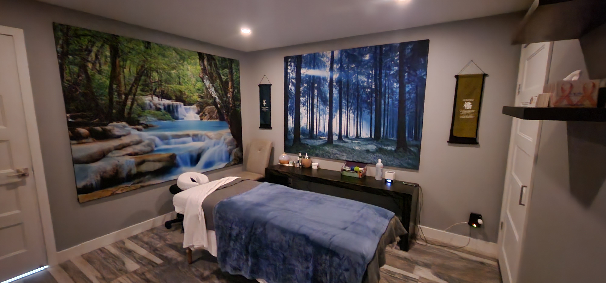
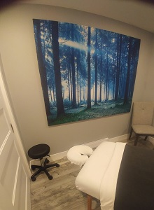
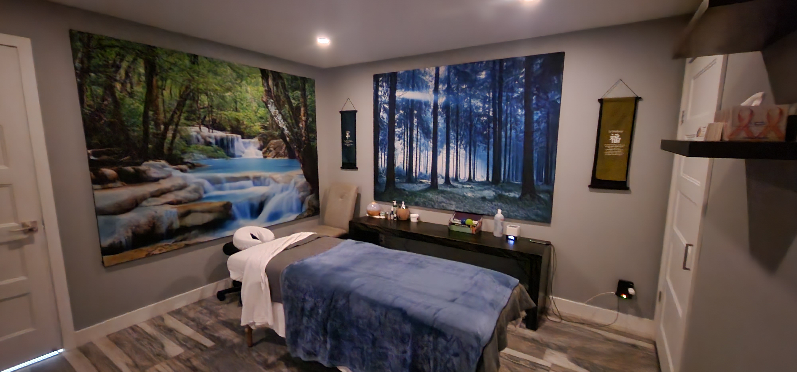
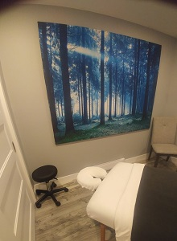

Marie Yannick Boyer
Forte de son diplôme de l'Académie de Massage Scientifique obtenu en 2007, Marie Yannick Boyer se distingue en tant que massothérapeute passionnée. La massothérapie, bien plus qu'une simple profession, est devenue pour elle une véritable vocation. Depuis ses débuts, elle a toujours été animée par un profond désir d'aider autrui, et c'est cette aspiration naturelle qui l'a guidée vers le domaine de la massothérapie.

La rencontre entre Marie Yannick et la massothérapie a été comme une évidence, une convergence entre sa sensibilité à apporter du bien-être et son intérêt pour la santé globale. Chaque séance de massage représente pour elle l'opportunité d'établir un contact privilégié avec ses clients, de contribuer à leur bien-être physique et mental, et de jouer un rôle concret dans leur quête d'équilibre et de sérénité.
 



Sa démarche professionnelle ne se limite pas à ses premières années de formation. Au contraire, Marie Yannick Boyer s'investit continuellement dans son développement personnel et professionnel. Elle enrichit régulièrement son bagage de compétences par le biais de formations pointues et sélectionnées avec minutie. Cette quête constante de perfectionnement reflète son engagement envers ses clients, cherchant toujours à offrir des soins d'une qualité optimale.
La diversité des formations qu'elle intègre à son parcours témoigne de son souci de répondre aux besoins spécifiques de sa clientèle. Marie Yannick met un point d'honneur à adapter ses méthodes pour soulager efficacement les tensions et les inconforts que rencontrent ses clients. Chaque nouvelle technique apprise devient un outil de plus dans son arsenal thérapeutique, renforçant ainsi sa capacité à offrir des solutions sur mesure et ciblées.
En confiant leur bien-être à Marie Yannick Boyer, les clients savent qu'ils bénéficient des compétences d'une massothérapeute dévouée, passionnée et en constante évolution. Son parcours, jalonné de formations approfondies et guidé par un profond désir d'aider, en fait une professionnelle de confiance, capable de guider chacun vers une meilleure santé et un épanouissement personnel durable.